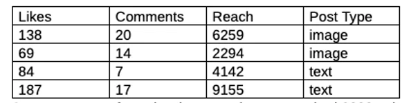

I have been active on LinkedIn for over two years now. And I got my voice heard. I found many people who resonated with my LinkedIn posts.
And my posts also reached people with whom Blusteak later worked with.
But for the last few weeks, I have a nagging feeling – “The organic reach of LinkedIn posts is going down.” I checked with some friends; they felt the same. But I didn’t find definite proof.
So, I went through the data I had. And ran an experiment to uncover the trend in the organic reach of LinkedIn.

I picked up random posts from the last two months and noted down their stats. And the table below lists the statistics of some best performing posts when I received a good LinkedIn organic reach.
For this experiment, I excluded those posts which reached to more than 10,000 people.

As you can see from the data, one image post had 6000+ views, while
another one crossed 2000 views. Then, the two text posts reached 4000+
and 9000+ people each.
However, the stats from the later posts weren’t so promising.
The table below lists the data of some top-performing recent posts (at the time of writing). Here too, I didn’t include the posts which had 10,000+ views.

These LinkedIn posts were text posts. And as you can see, these posts reached to only around 1000-2000 people.
A significant downfall, indeed. But don’t reach the conclusion yet. I dug further.
i) I calculated the average reach of a bunch of posts (and not only the top ones). And during the time, when LinkedIn algorithm favoured my posts, the average reach came out to be 1322 per post.
ii) Then, I averaged the reach of the recent posts. And the number was 922 per post.
iii) After that, I calculated the percentage difference. And the resultant number was around 31%. Yes, the average reach of my LinkedIn posts tipped down 30% within a matter of days.
And because of the reduced reach, the user engagement in those LinkedIn posts suffered too. It further affected the reach. Earlier, I used to see engagement from many people who weren’t even connected. But with my recent posts, I noticed interaction from my connections and followers only.
As per my observations, the following are the reasons for this changed behaviour of LinkedIn algorithm –
In the last few months, the popularity of LinkedIn grew manifold. Because of the coronavirus pandemic and country-wide lockdown, people began networking on LinkedIn. Many users, who weren’t active earlier, started posting on LinkedIn.
Marketers also became active as they found LinkedIn to be the best social media for organic reach. And with the huge influx of posts, the average reach went down.
As more content creators joined LinkedIn, many new features were introduced to keep them engaged. From document sharing to videos, and audio messages to reactions on posts, LinkedIn made a plethora of major and minor developments.
Recently, it also introduced Stories. And as LinkedIn saw an increase in daily log-ins, they found an opportunity for monetization. They reduced the reach. And now, more users will have to pay for LinkedIn Ads to boost their posts and reach their audience.
The organic reach of LinkedIn posts has taken a hit for sure. It might not be the organic social media platform it used to be. But you can still lead.
Build your authority and interact with your community. When you offer value and people resonate with your posts, they’ll engage and they’ll wait for your posts. And LinkedIn algorithm changes won't be a cause of worry anymore.
That’s all for today. I’ll be back with another experiment or study soon. In the meantime, comment below your LinkedIn experience and what all you do to boost user engagements.